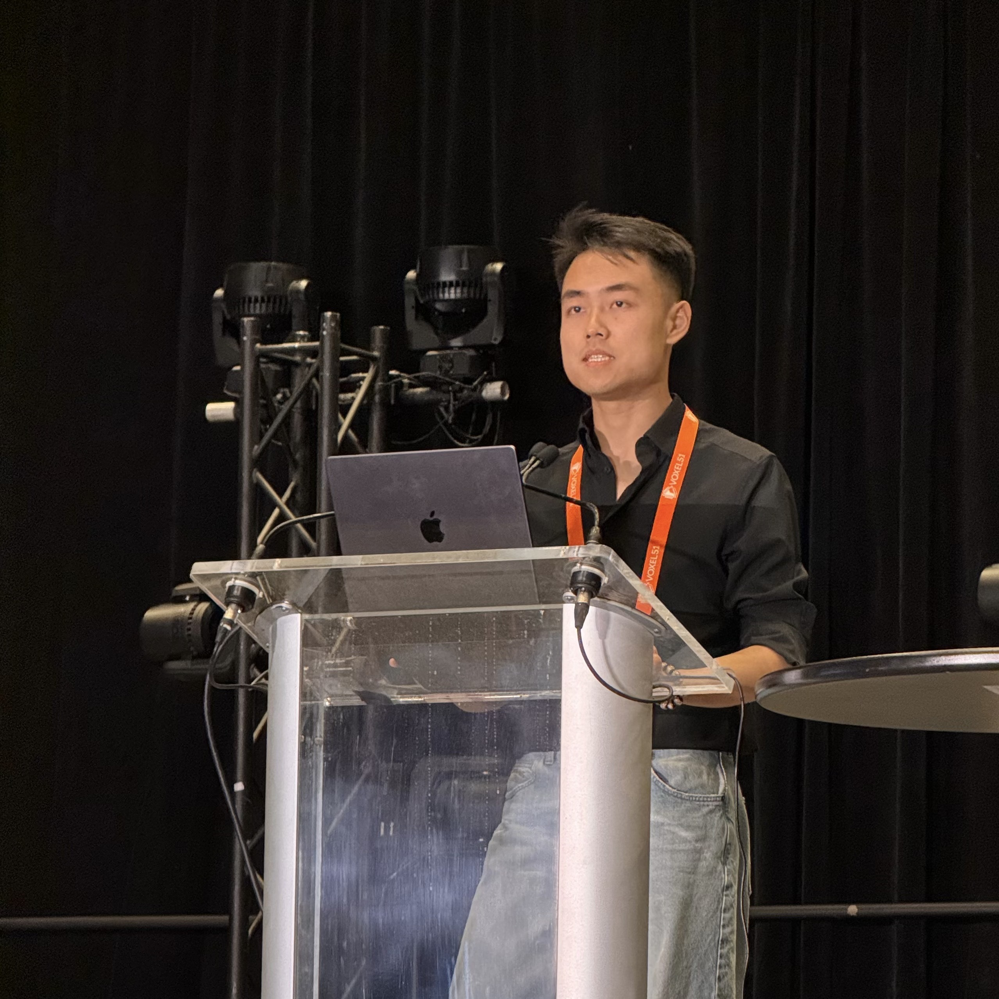
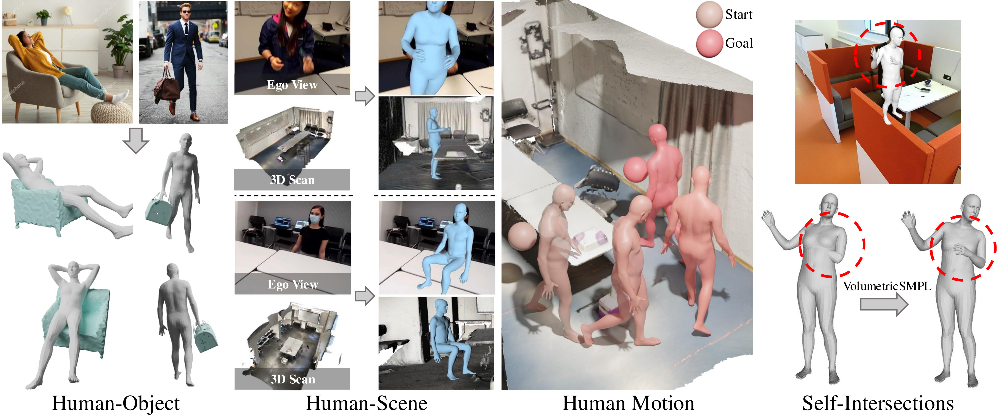
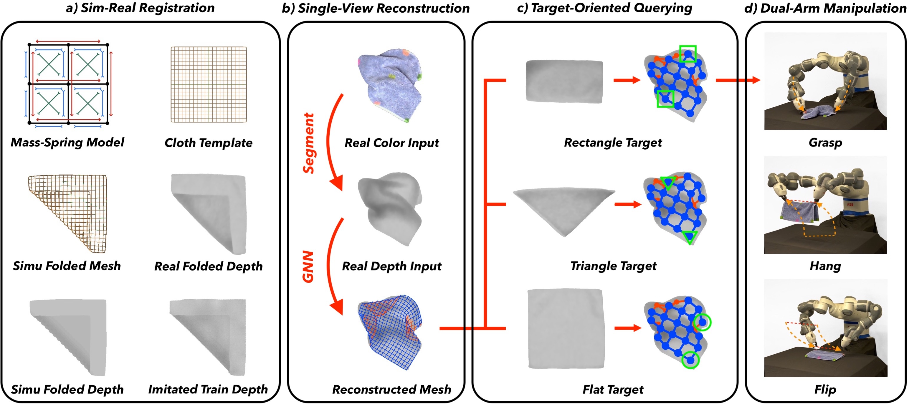
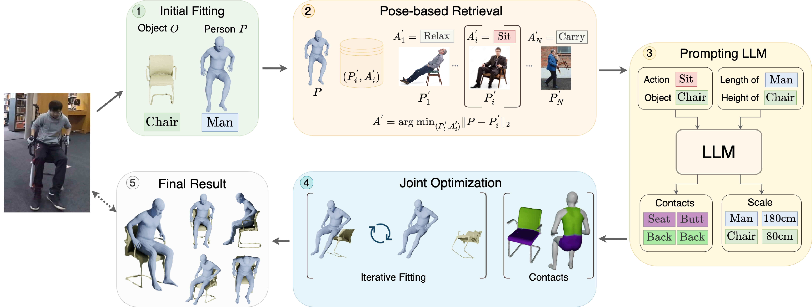
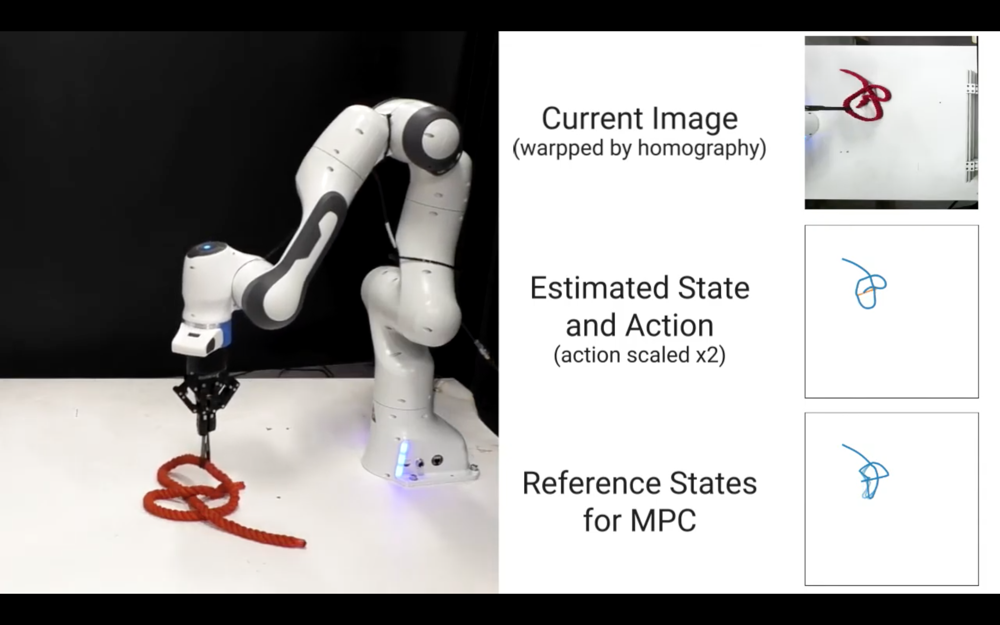

I am a final-year PhD candidate in the direct doctorate program in the Computer Vision and Learning Group (VLG) at ETH Zürich, supervised by Prof. Marc Pollefeys and Prof. Siyu Tang. Prior to this, I obtained my Bachelor's degree in Computer Science from Tsinghua University in 2020.
My long-term vision is to build scalable, multimodal foundation agents that deeply understand and safely interact with complex 3D/4D environments. Currently, my research bridges multimodal foundation models, egocentric vision, embodied human motion synthesis, and robotics.
My doctoral research is supported by the Microsoft Spatial AI Lab scholarship. Alongside my academic work, I have gained rich industry experience at Google with Vassilis Choutas and Thabo Beeler, and at Meta with Javier Romero. I have also collaborated with Prof. Jeannette Bohg at Stanford.
I am currently seeking Research Scientist or Assistant Professor opportunities. If you have openings that align with my background in scalable pretraining and embodied AI, please feel free to reach out!
Email / Google Scholar / LinkedIn / Github

- 10/2025 Will serve as an invited speaker at the 2nd EgoMotion Workshop at ICCV 2025.
- 09/2025 Invited to give a talk at Microsoft on Toward Egocentric Multimodal Multitask Pretraining (EgoGen + EgoM2P). Slides.
- 07/2025 Two papers (EgoM2P, VolumetricSMPL) are accepted to ICCV 2025, with VolumetricSMPL as a Highlight (top 2.3%). Also, I will be co-organizing the EgoMotion workshop.
- 01/2025 DartControl is accepted to ICLR 2025 as a Spotlight (top 3.26%).
- 03/2024 EgoGen is accepted to CVPR 2024 as an Oral (top 0.78%).
-
Student Researcher, Google 10/2025 – 01/2026Mentored by Vassilis Choutas in Thabo Beeler's group. Topic: Architected large-scale models and scaled pretraining for temporal 3D human motion reconstruction from monocular RGB video.
-
Research Scientist Intern,Mentored by Javier Romero.
 05/2026 – Now
05/2026 – Now
Gen Li,
ICCV 2025
@InProceedings{li2025egom2p,
author = {Li, Gen and Chen, Yutong and Wu, Yiqian and Zhao, Kaifeng and Pollefeys, Marc and Tang, Siyu},
title = {EgoM2P: Egocentric Multimodal Multitask Pretraining},
booktitle = {Proceedings of the IEEE/CVF International Conference on Computer Vision (ICCV)},
month = {October},
year = {2025},
pages = {10830-10843}
}EgoM2P: A large-scale egocentric multimodal and multitask model, pretrained on eight extensive egocentric datasets totaling 400 billion multimodal tokens. It incorporates four modalities—RGB and depth video, gaze dynamics, and camera trajectories. EgoM2P matches or outperforms SOTA specialist models in challenging tasks including monocular egocentric depth estimation, camera tracking, gaze estimation, and conditional egocentric video synthesis, while being an order of magnitude faster.

ICCV 2025, Highlight (Top 2.3%)
@InProceedings{Mihajlovic_2025_ICCV,
author = {Mihajlovic, Marko and Zhang, Siwei and Li, Gen and Zhao, Kaifeng and Muller, Lea and Tang, Siyu},
title = {VolumetricSMPL: A Neural Volumetric Body Model for Efficient Interactions, Contacts, and Collisions},
booktitle = {Proceedings of the IEEE/CVF International Conference on Computer Vision (ICCV)},
month = {October},
year = {2025},
pages = {5060-5070}
}VolumetricSMPL is a lightweight and user-friendly add-on module for SMPL(-X)-based body models, enabling seamless volumetric extension. With just a single line of code, users can extend SMPL models with volumetric functionalities. After completing the forward pass, they gain access to key volumetric functionalities, including SDF queries, self-intersection loss, and collision penalties. This implementation maintains full compatibility with existing SMPL-based reconstruction and perception applications.
ICLR 2025, Spotlight (Top 3.26%)
@inproceedings{Zhao:DartControl:2025,
title = {{DartControl}: A Diffusion-Based Autoregressive Motion Model for Real-Time Text-Driven Motion Control},
author = {Zhao, Kaifeng and Li, Gen and Tang, Siyu},
booktitle = {The Thirteenth International Conference on Learning Representations (ICLR)},
year = {2025}
}DartControl achieves high-quality and efficient (> 300 frames per second) motion generation conditioned on online streams of text prompts. Furthermore, by integrating latent space optimization and reinforcement learning-based controls, DartControl enables various motion generation applications with spatial constraints and goals, including motion in-between, waypoint goal reaching, and human-scene interaction generation.
Gen Li,
CVPR 2024, Oral Presentation (Top 0.78%)
@InProceedings{li2024egogen,
author = {Li, Gen and Zhao, Kaifeng and Zhang, Siwei and Lyu, Xiaozhong and Dusmanu, Mihai and Zhang, Yan and Pollefeys, Marc and Tang, Siyu},
title = {EgoGen: An Egocentric Synthetic Data Generator},
booktitle = {Proceedings of the IEEE/CVF Conference on Computer Vision and Pattern Recognition (CVPR)},
month = {June},
year = {2024},
pages = {14497-14509}
}EgoGen is a new synthetic data generator that produces accurate and rich ground-truth training data for egocentric perception tasks. It closes the loop for embodied perception and action by synthesizing realistic embodied human movements in 3D scenes and simulating camera rigs for head-mounted devices, rendering egocentric views with various sensors. We demonstrate EgoGen's efficacy in various downstream applications.

ICRA 2024
@article{wang2023trtm,
title={TRTM: Template-based Reconstruction and Target-oriented Manipulation of Crumpled Cloths},
authors={Wenbo Wang and Gen Li and Miguel Zamora and Stelian Coros},
booktitle={IEEE International Conference on Robotics and Automation (ICRA)},
year={2024}
}Precise reconstruction and manipulation of the crumpled cloths is challenging due to the high dimensionality of deformable objects, as well as the limited observation at self-occluded regions. We use Graph Neural Networks to reconstruct crumpled cloths from their top-view depth images, with our proposed sim-real registration protocols, enabling efficient dual-arm and single-arm target-oriented manipulations.

3DV 2022. * denotes equal contributions
@inproceedings{wang2022reconstruction,
title={Reconstructing Action-Conditioned Human-Object Interactions Using Commonsense Knowledge Priors},
author={Wang, Xi and Li, Gen and Kuo, Yen-Ling and Kocabas, Muhammed and Aksan, Emre and Hilliges, Otmar},
booktitle={International Conference on 3D Vision (3DV)},
year={2022}
}We propose an action-conditioned modeling of interactions that allows us to infer diverse 3D arrangements of humans and objects without supervision on contact regions or 3D scene geometry. Our method extracts high-level commonsense knowledge from large language models (such as GPT-3) and applies them to perform 3D reasoning of human-object interactions.

IROS 2020
@inproceedings{yan2020TMP,
title={Learning Topological Motion Primitives for Knot Planning},
authors={Mengyuan Yan and Gen Li and Yilin Zhu and Jeannette Bohg},
booktitle={IEEE International Conference on Intelligent Robots and Systems (IROS)},
year={2020}
}We propose a hierarchical approach where the top layer generates a topological plan, and the bottom layer converts it into robot motion using learned motion primitives. These primitives adapt to rope geometry using observed configurations and are trained via human demonstrations and reinforcement learning. To generalize from simple to complex knots, the neural network leverages shared motion strategies across topological actions.
- Invited speaker at the 2nd EgoMotion workshop at ICCV 2025. (Oct 2025)
- Invited to give a talk at Microsoft on Toward Egocentric Multimodal Multitask Pretraining. Slides. (Sep 2025)
- Reviewer for CVPR, ICCV, ECCV.
- Co-organizer (proposal stage) of EgoMotion workshop at ICCV 2025.
- Head Teaching Assistant, 263-5806-00L Digital Humans, ETH Zürich Spring 2024
- Teaching Assistant, 263-5806-00L Digital Humans, ETH Zürich Spring 2025
- Teaching Assistant, 263-5902-00L Computer Vision, ETH Zürich Fall 2023, Fall 2024
|
Template adapted from Siwei Zhang's website. |